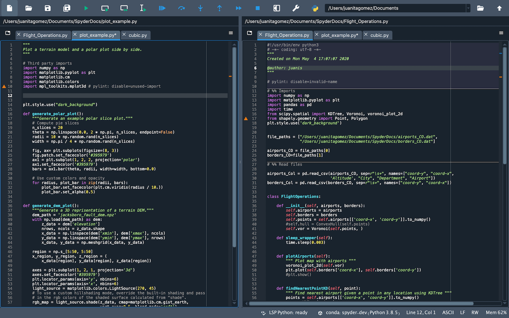
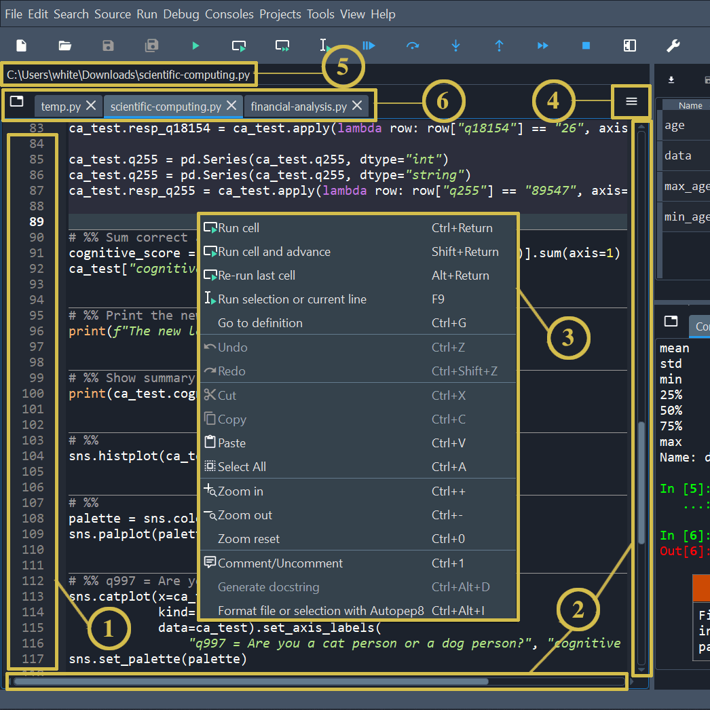
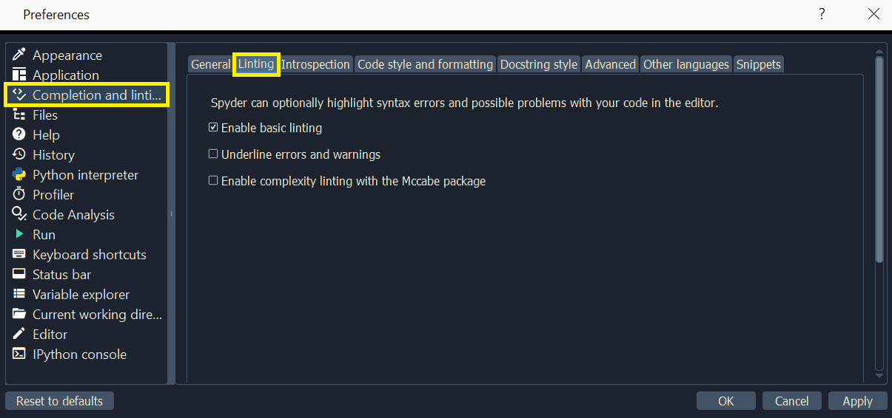
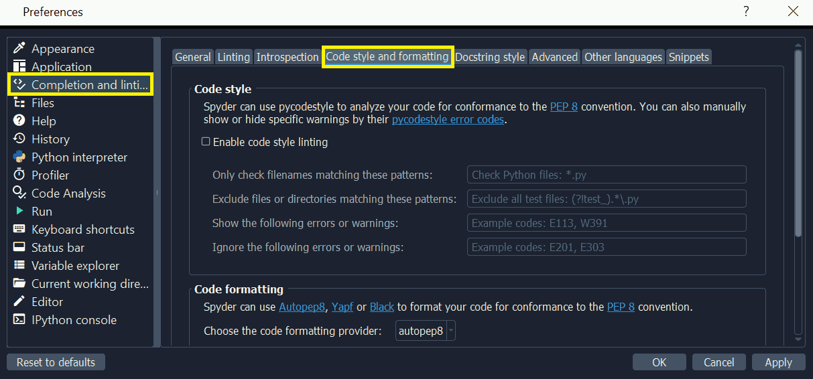
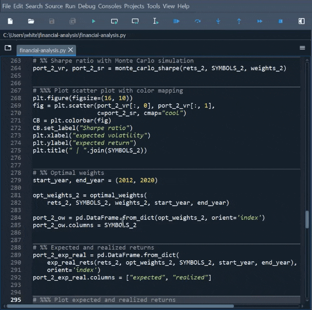

Editor#
El panel del Editor de varios lenguajes de Spyder es el elemento clave del IDE, donde puedes crear, abrir y modificar los archivos de origen. El editor ofrece una variedad de características básicas, tales como autocompletado, análisis en tiempo real, resaltado de sintaxis, división horizontal y vertical, y mucho más. Además, integra una serie de poderosas herramientas para una experiencia de edición fácil y eficiente.
Componentes clave#
El panel del Editor consta de las siguientes áreas:
La barra lateral izquierda muestra los números de línea y muestra las advertencias de análisis de código que existen en el archivo actual. Al hacer clic en un número de línea selecciona el texto en esa recta, y haciendo clic a la derecha se establece un punto de interrupción.
Las barras de desplazamiento permiten la navegación vertical y horizontal en un archivo.
El menú contextual (clic derecho) muestra acciones relevantes a cualquier cosa que se haya seleccionado.
El menú de opciones (icono «Hamburguesa» en la parte superior derecha) incluye opciones útiles y acciones relevantes para el Editor.
La barra de ubicación en la parte superior del panel del Editor muestra la ruta completa del archivo actual.
La barra de pestañas muestra los nombres de todos los archivos abiertos. También tiene un botón Navegar por las pestañas (a la izquierda) para mostrar cada pestaña abierta y cambiar entre ellas, que es útil si muchas están abiertas.
Interfaz#
Pestañas#
Puedes explorar y navegar entre archivos abiertos en el Editor con pestañas. Haz clic en el botón Navegar por las pestañas a la izquierda de la barra de pestañas para mostrar una lista de archivos abiertos, con la pestaña activa seleccionada.
Reordenar archivos arrastrando y soltando, o con Ordenar las pestañas alfabéticamente en el menú de opciones, que también permite cerrar todas las pestañas a la derecha de, o todas las pestañas excepto la activa.
Cambiador de archivos#
El Editor incluye un cambiador de archivos, que te permite navegar y cambiar entre varios archivos abiertos. El cambiador de archivos es útil para localizar cualquier archivo cuando hay varios archivos abiertos.
Se puede acceder desde el menú o Ctrl-P, e incluye una función de búsqueda. Puedes escribir cualquier parte del nombre de un archivo abierto y, si existe, puede ser cambiado pulsando Enter.
Dividir paneles#
El Editor puede dividirse horizontal y verticalmente en tantos paneles distintos como se desee. Esto permite visualizar y editar el contenido de varios archivos (o partes diferentes del mismo archivo) al mismo tiempo.
Divide el Editor con los comandos en el menú de opciones Dividir verticalmente (Ctrl-Shift-{) y Dividir horizontalmente (Ctrl-Shift--), y utiliza Cerrar este panel (Alt-Shift-W) para cerrar el panel de división seleccionado.
Nota
cierra un panel dividido, mientras que oculta todo el panel del editor (incluyendo todas las divisiones, que se restauran cuando se vuelve a abrir el Editor).
Editar características#
Coloreado de sintaxis#
Para mejorar la legibilidad de tu código, Spyder tiene una función de resaltado de sintaxis que determina el color y el estilo del texto en el editor, así como en el Terminal de IPython.
Puedes configurar y previsualizar los temas y fuentes de resaltado de sintaxis bajo . La sección Tema de coloreado de sintaxis te permite cambiar el color y el estilo de los elementos de sintaxis y el fondo para que coincida con tus preferencias. Puedes cambiar entre los temas disponibles en el menú desplegable, modificar el tema seleccionado, crear un nuevo tema y más. La sección Tipo de letra te permite cambiar el tamaño y la fuente de texto.
Nota
Los cambios realizados al tema de resaltado de sintaxis y a la configuración de fuentes son comunes a todos los archivos de fuente, independientemente de su idioma.
Celdas de código#
Una «celda de código» en Spyder es un bloque de líneas, normalmente un script, que puede ser fácilmente ejecutado todo a la vez en el Terminal de IPython. Esto es similar al comportamiento de «celda» en Jupyter Notebook y MATLAB. Puedes dividir tus scripts en tantas celdas como necesites o ninguna en absoluto, la elección es tuya.
Puedes separar las celdas por líneas comenzando por:
# %%(separador estándar de celda), o# <codecell>(separador de celdas de notebook IPython)
Proporcionar una descripción a la derecha del separador dará a esa celda su propio nombre en el Explorador de código. También puedes crear «subsecciones» añadiendo más signos de % al separador de celda, por ejemplo # %%% para crear una subsección de nivel 2, # %%%% para el nivel 3, etc. Esto muestra varios niveles en el panel Explorador de código.
Nota
Esto solo afecta a cómo se muestra la celda en el Explorador de código, y no afecta a ejecutarla en el Editor.
Para ejecutar el código en una celda, usa , el botón Ejecutar la celda actual en la barra de herramientas o el atajo de teclado (Ctrl-Enter/Cmd-Return por defecto). También puedes ejecutar una celda y luego saltar a la siguiente, permitiéndote pasar rápidamente por varias células, usando (Shift-Enter por defecto).
Formato automático#
El editor tiene soporte integrado para formatear automáticamente tu código usando varias herramientas populares, incluyendo Autopep8 y Black. El comando Formatear archivo o selección con {tool}, en el Source o en el menú contextual, formatearán el fragmento seleccionado (si se selecciona el texto) o todo el archivo activo.
Puedes tener el Editor automáticamente para autoformatear un archivo cada vez que guardes tu trabajo. Para configurarlo, ve a y activa la opción Autoformatear archivos al guardar.
Ejecutar código#
El Editor te permite ejecutar un archivo completo, así como líneas específicas, selecciones o celdas.
Mientras tu código se ejecuta,
La Terminal de IPython mostrará salida y errores.
El Explorador de variables te permite navegar e interactuar con los objetos generados.
El panel Gráficos muestra las figuras e imágenes creadas.
Ejecutar archivo#
Ejecuta un archivo completo del Editor usando el elemento del menú , el botón de la barra de herramientas Ejecutar archivo o la tecla F5. Usa para volver a ejecutar el archivo más reciente ejecutado con el anterior.
Ejecutar línea/selección#
Puedes ejecutar la línea actual o varias líneas seleccionadas usando la opción Ejecutar selección o línea actual desde la barra de herramientas o en el menú , así como con la tecla F9. Después de ejecutar la línea actual, el cursor avanza automáticamente a la siguiente, así que puedes pasar a través de tu código línea por línea. A diferencia de Ejecutar archivo, las líneas ejecutadas se muestran en la Terminal de IPython.
Ejecutar celda#
Para ejecutar una celda, coloca tu cursor dentro de ella y usa el elemento de menú , el botón de la barra de herramientas Ejecutar la celda actual o el atajo de teclado Ctrl-Enter / Cmd-Return. Usa Ejecutar la celda y avanzar a la siguiente en el menú/barra de herramientas Ejecutar o Shift-Enter para saltar a la siguiente celda después de ejecutar, esto es útil para atravesar rápidamente las celdas.
Configuración de ejecución#
Puedes utilizar el cuadro de diálogo Configuración de ejecución por archivo para establecer el directorio de trabajo de cada archivo, el modo de consola (actual, dedicada o terminal de comandos del sistema), argumentos de línea de comandos, opciones de ejecución (borrar todas las variables, ejecutar en un espacio de nombres existente/vacío, depurar en un error) y más.
Para acceder a él, haz clic en o pulsa Ctrl-F6 / Cmd-F6.
Completado y análisis del código#
Spyder utiliza el Protocolo de Servidor de Idioma (LSP) para proporcionar el completado de código y linting para el Editor, similar a VSCode, Neovim, y otros editores/IDE populares.
Nota
Muchos problemas con el completado y el linting están fuera del control de Spyder y son o bien limitaciones con el LSP o el código que se está introduciendo, pero algunas pueden ser trabajadas. Vea El autocompletado o la ayuda no funcionan para los pasos de solución de problemas.
Python está soportado por defecto, y los usuarios avanzados pueden añadir soporte de completado y linting para otros idiomas configurando los servidores LSP en .
Completado de código#
El completado automático de código está activado de forma predeterminada en el Editor mientras escribes, pero también puede ser activado manualmente con Ctrl-Space/Cmd-Space, el cual muestra las posibles formas de completar (con una ayuda emergente para cada una) y los fragmentos de código disponibles. Por ejemplo, escribir cla mostrará la palabra clave class, el decorador classmethod y dos fragmentos incorporados con plantillas de clases. Selecciona la terminación deseada con las teclas de flecha y Enter, o haciendo doble clic.
Puedes activar o desactivar el completado de código sobre la marcha, así como modificar cuando se activa y qué resultados se muestran, bajo . Spyder también te permite definir fragmentos de completado personalizados a utilizar, además de los ofrecidos por el LSP, bajo .
Linting y estilo de código#
Spyder puede resaltar opcionalmente errores de sintaxis, problemas de estilo y otros problemas potenciales con tu código en el Editor, lo que puede ayudarte a detectar errores rápidamente y hacer que tu código sea más fácil de leer y entender.
El linting básico del Editor, desarrollado por Pyflakes, advierte los errores de sintaxis y posibles errores en tu código. Está activado por defecto, y puede ser deshabilitado o personalizado bajo .
El análisis de estilo de código, desarrollado por Pycodestyle, señala las desviaciones de las convenciones de estilo en PEP 8. No está activo por defecto, pero puedes activarlo y personalizar los códigos de error Pycodestyle mostrados con las opciones .
Características de introspección#
Si hay una función, clase o variable para la que desea comprobar su definición, necesitas hacer Ctrl/Cmd-clic en su nombre en el Editor (o haz clic en su nombre y pulsa Ctrl-G / Cmd-G para saltar al archivo y línea donde se declara.
Puedes pasar por encima del nombre de un objeto para ayuda emergente, como se describió en la documentación del panel de ayuda.
Finalmente, si escribes el nombre de una función, método o constructor de clase y luego un paréntesis abierto, aparecerá un calltip que mostrará los parámetros de la función a medida que los escribas, así como un resumen de su documentación. Estas características pueden ser habilitadas y personalizadas bajo .
Atajos de teclado#
Para ver los atajos de teclado primarios del Editor, consulta la sección bajo . La lista completa se puede buscar, buscar y personalizar (en doble clic) en .